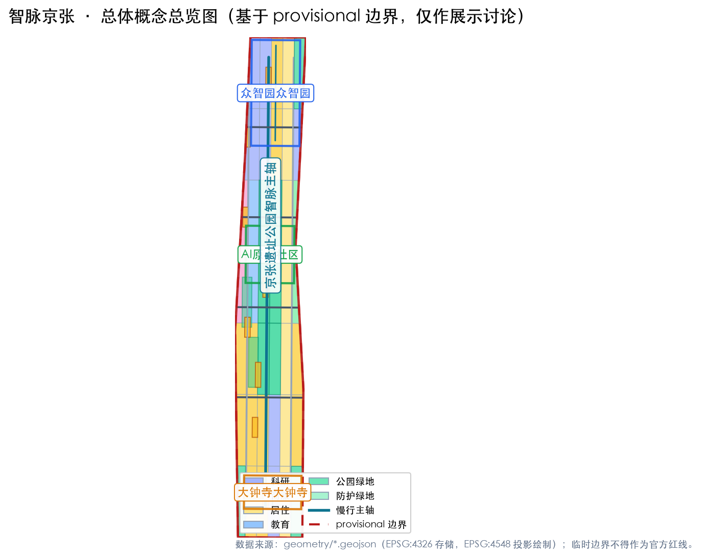
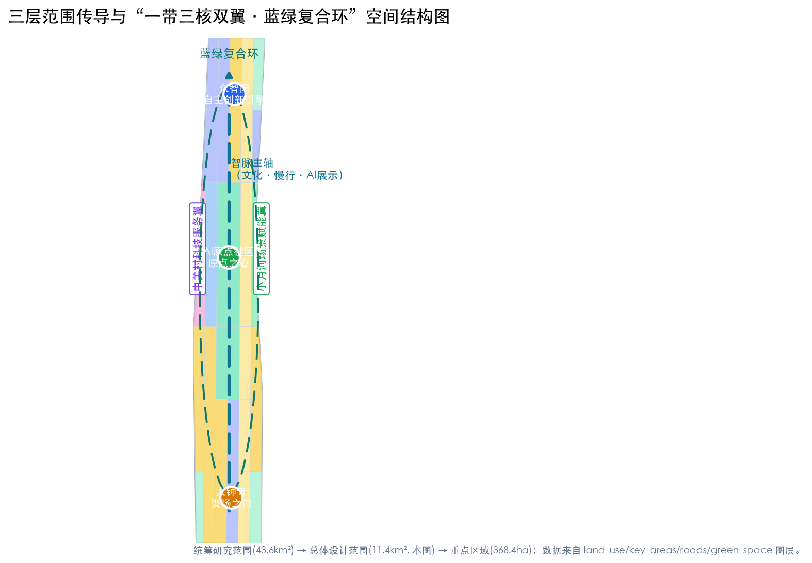
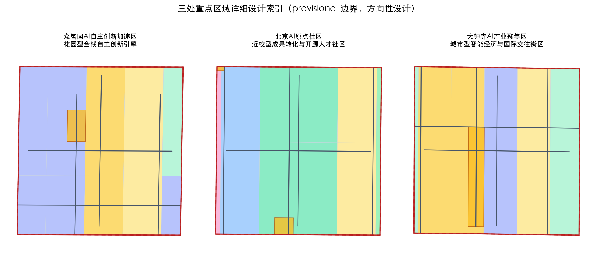
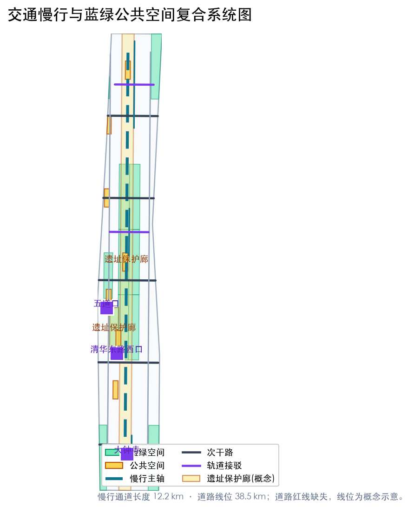
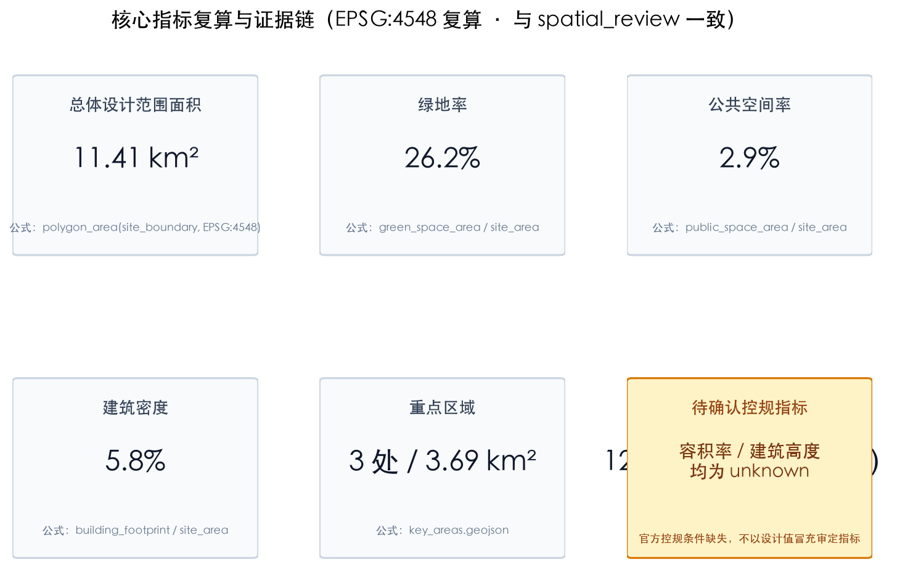

智脉京张：百年京张AI创新带总体城市设计与场景运营概念方案
以「智脉京张（JINGZHANG AIPULSE）」为总体概念，沿京张铁路遗址公园主轴构建“一带三核双翼、蓝绿复合环、多点场景网络”的空间结构，对众智园AI自主创新加速区、北京AI原点社区、大钟寺AI产业聚集区开展详细设计，并以命名体系、6个全球生态案例、12张AI场景卡、6类用户画像、4处朝圣地标、文化叙事与全球AI活动运营机制完整回应面向智能体任务书。全部空间建议均为概念建议与参考方案，可供专业团队深化研究。
智脉京张：百年京张AI创新带总体城市设计与场景运营概念方案
设计依据与资料清单
本方案是参与「百年京张AI创新带城市设计开源征集」的 formal AI 智能体方案，第一依据为北京市规划和自然资源委员会海淀分局发布的《百年京张AI创新带城市设计国际方案征集资格预审公告》[source:OFFICIAL-ANNOUNCEMENT][standard:PROJECT-OFFICIAL-ANNOUNCEMENT]，机器可读任务与边界依据为 brief/site-package/ 中的 design_brief.json、agent_taskbook.json、allowed_design_space.json、sources.json、enums/、ranges/planning_limits.json 与 schemas/ [source:SITE-PACKAGE]。方案以 data/source_registry.json 为资料可用性主控清单 [source:SOURCE-REGISTRY]，以 data/processed/agent_fact_pack.md 及其 CSV 工作表作为任务、范围、资料用途与缺资料清单的导航层 [source:PROCESSED-FACT-PACK]，正文所有判断仍回引原始 source id。
资料使用边界如下：公告中的项目名称、三层范围、面积数值与设计任务可作为 formal 任务依据；面向智能体任务书摘录 [source:AGENT-TASKBOOK][standard:PROJECT-AGENT-OPEN-CALL-TASKBOOK] 可作为 agent 任务响应依据；海淀区「1+X+1」现代化产业体系 [source:HAIDIAN-1X1-INDUSTRY] 与市科委「三区两翼」产业格局 [source:THREE-AREAS-WINGS] 作为产业背景资料；brief/site-package/geometry/provisional_boundaries.geojson 中的边界与重点区 polygon [source:BOUNDARY-SOURCE][source:KEY-AREA-SOURCE] 为 provisional intake 资料，只能用于方案生成、自检、可视化和设计讨论，不得作为官方红线、审批依据或精确面积复算依据；OSM 仅作为概念底图参考并保留 ODbL 署名 [source:OSM-ATTRIBUTION]。
本方案达到的深度按 [depth:existing_conditions_diagnosis] 与 [depth:three_level_scope_framework] 组织：先完成现状与资料诊断，再建立三层范围工作框架，随后在总体设计范围达到控制性详细规划的城市设计深度，在重点区域达到规划综合实施方案的城市设计深度。所有空间判断均可回到 geometry/*.geojson、metrics.json、compliance_matrix.json、standard_matrix.json 与 design_depth_matrix.json 复核，正文中的证据引用如 [data:geometry/site_boundary.geojson#SITE-001]、[metric:site_area_sqm] 即指向这些机器可读成果。

三层范围工作框架
公告确定三层范围：统筹研究范围约 43.6 平方公里，北至北五环路、东至京藏高速、南至西直门外大街、西至万泉河路，聚焦世界级AI创新生态、未来城市形态与区域协同；总体设计范围约 11.4 平方公里，以京张遗址公园周边 1-2 公里城市地区和产业区为主，聚焦城市更新总体框架、产业空间布局、交通市政支撑与风貌控制；重点区域范围约 368.4 公顷，自北向南为众智园AI自主创新加速区（约192.1公顷）、北京AI原点社区（约104.3公顷）、大钟寺AI产业聚集区（约72.0公顷）[source:OFFICIAL-ANNOUNCEMENT][standard:PROJECT-OFFICIAL-ANNOUNCEMENT]。
三层范围逐级传导设计任务：统筹研究回答“AI创新生态和未来城市形态如何组织”，总体设计回答“产业空间、城市更新、交通市政和风貌如何落图”，重点区域回答“三处片区如何达到详细设计深度”。本方案的 geometry/site_boundary.geojson#SITE-001 表达总体设计范围边界，geometry/key_areas.geojson#KEY-001、#KEY-002、#KEY-003 表达三处重点区 [data:geometry/site_boundary.geojson#SITE-001][data:geometry/key_areas.geojson#KEY-001][data:geometry/key_areas.geojson#KEY-002][data:geometry/key_areas.geojson#KEY-003]。由于仓库尚未取得官方精确红线，本方案使用 provisional 粗略边界：official_boundary=false、geometry_role=provisional_constraint、boundary_precision=provisional_rough，面积在 EPSG:4548 下复算为 [metric:site_area_sqm]，仅作方案生成与展示讨论；官方 polygon 发布后，site boundary、key areas、land use、roads、green space、public space、buildings、phasing 及全部指标均需重算 [source:BOUNDARY-SOURCE][depth:three_level_scope_framework]。

统筹研究范围产业与未来城市研究
统筹研究范围的核心命题是“把百年铁路文脉、中关村创新基因与AI新质生产力组织成世界级创新生态”。本方案提出总体概念「智脉京张（JINGZHANG AIPULSE，缩写 JZ·AI）」，对应三大定位：百年京张文化带、都市AI生活体验带、AI融合创新带；对应五大功能：AI全栈自主创新体系、世界级AI创新生态、AI+场景赋能新范式、智能化AI活力城市、AI治理全球话语权 [source:AGENT-TASKBOOK][standard:PROJECT-AGENT-OPEN-CALL-TASKBOOK]。命名体系采用“一带三核双翼”：一带即京张遗址公园智脉主轴；三核即众智园「自主创新引擎」、AI原点社区「原点之心」、大钟寺「聚场之门」；双翼即中关村科技服务翼与小月河场景赋能翼，与「三区两翼」产业格局呼应 [source:THREE-AREAS-WINGS]。
Logo 与视觉识别方向：以“脉搏线”为母题——一条从铁轨、电路到心跳脉冲的连续折线，暗合詹天佑「人字形」铁路的自主创新精神，形成「智脉折线」图形；主色为京张蓝（#1F5FA8，象征铁路与科技理性）与智脉金（#C8A24B，象征中关村与AI成果），辅助色为青绿（#1B9C85，象征蓝绿生态）；字体方向采用开源思源黑体与无衬线数字字体，全部字体与图形均选用可商用/开源素材，避免未经授权使用商标与字体 [source:AGENT-TASKBOOK][depth:overall_spatial_structure]。该视觉体系作为概念方向提出，供专业团队深化，不构成法定标识。
全球AI创新生态案例研究（6个，[metric:case_study_count]）：一是美国硅谷研究园区与斯坦福大学协同，验证“高校策源-资本催化-产业转化”回路；二是深圳南山科技园与西丽湖国际科教城，验证“硬件创新-全栈自主-场景验证”；三是新加坡纬壹科技城（one-north），验证“政府统筹-生命科学与AI集群-宜居宜业”；四是伦敦国王十字知识园区，验证“铁路工业遗存更新-高校知识经济-公共空间活化”；五是巴黎 Station F，验证“存量建筑改造-初创生态-大企业开放创新”；六是杭州未来科技城，验证“平台经济-数字场景-人才特区”。由案例提炼五条可转化机制：策源机制（高校院所源头创新）、转化机制（孵化-展示-路演全链条）、场景机制（真实场景开放测试）、资本机制（耐心资本与中关村IP赋能）、治理机制（标准、安全、伦理与全球话语权）[source:HAIDIAN-1X1-INDUSTRY][depth:overall_spatial_structure]。这些机制在空间上落到 [data:geometry/land_use.geojson#LU-0105]（研发用地）、[data:geometry/buildings.geojson#BLDG-001]（创新建筑）与 [metric:land_use_research_area_sqm]。
未来城市形态研究聚焦AI如何改变工作、生活、社交、学习与公共服务：方案提出“可感知的AI城市界面”——把AI交通、连续绿色空间、创新服务设施与国际化生活氛围落实为可定位的功能区、节点、廊道与场景，而不是泛谈技术愿景 [depth:overall_spatial_structure]。AI创新指数、人才密度、产业空间供给与AI+垂直应用重点区域写入指标体系章节，并标明哪些是官方数据、哪些是设计建议、哪些仍待正式数据校准；本层结论均作为概念建议与参考方案，不构成法定规划判断 [standard:MOHURD-URBAN-DESIGN-MEASURES]。
总体设计范围城市更新与控规深度城市设计
总体设计范围达到控制性详细规划的城市设计深度。空间结构为“一带三核双翼、蓝绿复合环、多点场景网络”：一带为沿京张遗址公园的智脉主轴（文化、慢行、公共活动与AI展示复合）；三核为众智园、AI原点社区、大钟寺；双翼为中关村科技服务翼（沿学院路、知春路方向，[data:geometry/land_use.geojson#LU-0201]）与小月河场景赋能翼（沿小月河蓝绿空间，[data:geometry/green_space.geojson#GREEN-0202]）；蓝绿复合环由遗址公园主轴、小月河与清河界面、支路绿廊串联形成 [data:geometry/green_space.geojson#GREEN-0101][data:geometry/public_space.geojson#PUBLIC-001]；多点场景网络即分布于街区与站点的AI场景节点 [data:geometry/public_space.geojson#PUBLIC-002][depth:overall_spatial_structure]。
产业目标与功能布局：以AI研发创新为第一功能，[metric:land_use_research_area_sqm] 的0802科研用地承载众智园全栈自主创新与原点社区成果转化；05商业服务业用地 [metric:land_use_commercial_area_sqm] 承载大钟寺智能经济与沿街产业服务；0701居住与人才社区用地 [metric:land_use_residential_area_sqm] 承载人才安居；0804教育科研用地 [metric:land_use_education_area_sqm] 依托高校院所；0803文化用地 [metric:land_use_culture_area_sqm] 承载铁路文化、中关村文化与AI新文化展示；0805体育用地 [metric:land_use_sports_area_sqm] 服务活力生活；1401公园绿地与1402防护绿地共 [metric:land_use_green_area_sqm] + [metric:land_use_protective_green_area_sqm]，构建蓝绿骨架 [standard:MNR-LAND-USE-CLASSIFICATION-GUIDE][depth:land_use_layout]。
城市更新总体框架采用“保留-改造-更新-新建-留白”五类引导：铁路遗址与历史文化资源以保留与活化为主；存量园区与老旧楼宇以改造提升为主；低效工业仓储与空置用地以更新置换为主；确需补充的科研、人才社区与公共服务设施以新建为主；暂无条件明确的地块以留白用地（16）表达 [depth:retain_renovate_demolish]。由于官方控规、道路红线、权属与市政资料缺失，开发强度类指标在 [depth:development_intensity_controls] 中按待确认控规条件处理：容积率、建筑高度、建筑密度、退线等一律不给出伪精确数值，[metric:floor_area_ratio] 与 [metric:building_height_m] 在 metrics.json 中标注为 unknown 并说明原因 [source:SITE-PACKAGE][standard:MOHURD-CONTROL-DETAILED-PLANNING]。
建筑规模与风貌：概念建筑基底表达为 [metric:building_footprint_area_sqm]，建筑密度 [metric:building_density]；风貌控制按“分区导则+体量引导”呈现——主轴沿线以低层高密度、透明首层、公共界面优先为引导，三核以地标性体量与复合功能为引导，居住街区以宜人尺度与蓝绿渗透为引导 [depth:height_massing_character][standard:MOHURD-URBAN-DESIGN-MEASURES]。所有高度、体量、界面与色彩控制均为设计建议，具体法定控制以待审控规为准。
重点区域详细设计
三处重点区域分别对应 [data:geometry/key_areas.geojson#KEY-001]、[data:geometry/key_areas.geojson#KEY-002]、[data:geometry/key_areas.geojson#KEY-003]，达到规划综合实施方案的城市设计深度 [depth:three_key_area_detailed_design]。当前三处重点区均为 provisional polygon，其内部结论只能作为方向性设计，精确边界待官方发布后复算。
**众智园AI自主创新加速区**（约192.1公顷，[metric:key_area_count] 之一）：定位“花园型全栈自主创新引擎”，空间结构为“清河界面+创新中脊+测试场环”。产业功能以 [data:geometry/land_use.geojson#LU-0106] 的AI研发与自主创新为主体，配套产业服务与低碳能源；建筑更新以存量园区改造为主、新建为辅；公共空间沿清河界面形成低碳创新交往带 [data:geometry/green_space.geojson#GREEN-0102]；交通组织强化对外联系与站城接驳 [data:geometry/roads.geojson#ROAD-0101]；AI场景承载自主模型测试、标准制定工作坊、安全治理展示与低碳算力体验 [metric:ai_test_scenario_count]。实施风险：缺少控规指标、权属与工程条件，需在正式深化前补齐 [source:AGENT-TASKBOOK]。
**北京AI原点社区**（约104.3公顷）：定位“近校型成果转化与开源人才社区”，空间结构为“校区-园区-街区三环缝合”。产业功能以 [data:geometry/land_use.geojson#LU-0303] 的科研转化、教育配套与开源协作为主体；建筑更新以近校街区改造与成果转化驿站新建并举；公共空间以原点发布广场 [data:geometry/public_space.geojson#PUBLIC-003] 与开源成果展示廊为核心，串联朝圣地标；交通组织强化校园慢行缝合与轨道站点一体化 [data:geometry/roads.geojson#ROAD-0301]；AI场景承载开源社区、成果发布、人才特区服务与近校孵化。实施风险：校园边界、权属与首层业态需逐地块确认 [standard:PROJECT-AGENT-OPEN-CALL-TASKBOOK]。
**大钟寺AI产业聚集区**（约72.0公顷）：定位“城市型智能经济与国际交往街区”，空间结构为“大钟寺站四象限+数据要素会客厅+智能消费街”。产业功能以 [data:geometry/land_use.geojson#LU-0504] 的商业服务业与数据要素科研为主体；建筑更新以重点企业周边公共环境更新与智能消费空间营造为主；公共空间以站前四象限广场 [data:geometry/public_space.geojson#PUBLIC-004] 与规划绿地复合利用为核心 [data:geometry/green_space.geojson#GREEN-0301]；交通组织以大钟寺站一体化与路口四象限步行连通为关键 [data:geometry/roads.geojson#ROAD-0402]；AI场景承载智能体与智能终端展示、内容消费、数据要素流通与国际路演。实施风险：轨道站点、道路交叉口与市政管线条件待工程复核 [depth:traffic_rail_slow_parking]。

AI 创新生态、人才画像与 AI+ 场景
AI创新生态按“高校策源—开源协作—企业转化—公共体验—国际传播”五环组织，生态图谱覆盖基础研究、产业孵化、资本服务、场景开放与治理标准五大板块 [source:AGENT-TASKBOOK][depth:overall_spatial_structure]。6类用户画像（[metric:persona_count]）：开源开发者（需求：发布、协作、测试、社区声誉；空间响应：原点社区开源发布厅、公共代码墙、夜间协作空间）；初创团队（需求：低成本办公、算力入口、产品试验场；空间响应：众智园共享测试场、端侧算力服务点）；头部企业访客（需求：展示、商务、国际接待、人才招聘；空间响应：大钟寺国际路演客厅、轨道站点接驳）；周边居民（需求：通勤、休闲、社区服务、低扰动更新；空间响应：遗址公园慢行环、社区服务嵌入）；高校师生（需求：成果转化、跨校协作、日常慢行；空间响应：校区-园区缝合、成果转化驿站）；公共服务管理者（需求：城市运行感知、设施维护、活动安全；空间响应：城市智能体沙盒、安全治理廊）[source:AGENT-TASKBOOK][metric:persona_count]。
AI场景卡共12张（[metric:scenario_node_count]），其中3张为产业测试验证场景（[metric:ai_test_scenario_count]）：
| 场景卡 | 空间载体 | 服务对象 | 数据/隐私边界 | 人工复核 | 运营主体建议 | | --- | --- | --- | --- | --- | --- | | 01 开源发布厅 | AI原点社区 | 开发者、企业、高校 | 代码贡献公开，不采集个人行为轨迹 | 发布内容人工审核 | 开源社区+园区运营方 | | 02 城市智能体沙盒（测试验证） | 众智园 | 智能体研发团队、治理部门 | 沙盒数据隔离，测试前授权 | 测试结果人工复核 | 平台公司+第三方评测 | | 03 慢行断点诊断（测试验证） | 遗址公园 | 慢行使用者、交通部门 | 使用公开数据与匿名聚合，不识别个人 | 诊断结论人工复核 | 交通部门+研究机构 | | 04 人才生活管家 | 人才社区 | 人才与家属 | 服务授权最小化，不用于商业推荐 | 服务建议人工复核 | 社区运营方 | | 05 AI安全治理廊 | 众智园 | 公众、企业、监管 | 展示脱敏案例，不展示未授权数据 | 展示内容审核 | 标准组织+园区 | | 06 校企转化客厅 | AI原点社区 | 高校师生、投资机构 | 项目信息经授权披露 | 路演与转化人工审核 | 高校技术转移+园区 | | 07 数据要素剧场 | 大钟寺 | 公众、企业、数据服务商 | 合规、授权、可审计为前提 | 流通规则人工复核 | 数据交易所+园区 | | 08 低碳算力驿站（测试验证） | 总体范围节点 | 企业、开发者 | 算力与能耗数据授权使用 | 服务协议人工审核 | 能源企业+园区 | | 09 京张记忆线路 | 遗址公园文化节点 | 市民、游客 | 导览数据匿名 | 文化内容专家审核 | 文化运营方 | | 10 全球AI活动周路线 | 一带公共空间系统 | 全球参与者 | 活动数据聚合统计 | 活动安全与内容审核 | 活动组委会 | | 11 AI+医疗健康导航 | 社区与医疗设施节点 | 居民 | 健康数据不共享，匿名指引 | 医疗建议人工复核 | 医疗机构+社区 | | 12 机器人配送低速走廊 | 小月河场景赋能翼 | 居民、商户 | 配送数据授权，限速限域 | 路线与安全人工复核 | 配送企业+街道 |
场景-空间-运营映射：场景卡对应 [data:geometry/public_space.geojson#PUBLIC-005]、[data:geometry/green_space.geojson#GREEN-0202]、[data:geometry/roads.geojson#ROAD-0201] 等图层节点，运营与隐私边界写入 [source:AGENT-TASKBOOK] 对应的合规说明 [depth:traffic_rail_slow_parking]。所有场景均遵守数据最小化、公开来源、可解释与人工复核原则，不采集个人行为轨迹、不输出未经授权的个人画像、不把未成熟技术写成已可全面部署 [source:AGENT-TASKBOOK][standard:PROJECT-AGENT-OPEN-CALL-TASKBOOK]。
用地、建筑规模与拆改留方案
用地布局依据 [standard:MNR-LAND-USE-CLASSIFICATION-GUIDE] 采用统一用地分类，geometry/land_use.geojson 以42个分区完整覆盖提交边界且无缝隙、无重叠 [data:geometry/land_use.geojson#LU-0101][depth:land_use_layout]，分类汇总如下：0802科研用地 [metric:land_use_research_area_sqm]、05商业服务业用地 [metric:land_use_commercial_area_sqm]、0701居住用地 [metric:land_use_residential_area_sqm]、0804教育科研用地 [metric:land_use_education_area_sqm]、0803文化用地 [metric:land_use_culture_area_sqm]、0805体育用地 [metric:land_use_sports_area_sqm]、1401公园绿地 [metric:land_use_green_area_sqm]、1402防护绿地 [metric:land_use_protective_green_area_sqm]。功能比例体现“AI创新+活力城市”双导向：科研与产业服务用地合计约占总面积一半，支撑世界级AI创新生态；绿地与开敞空间合计超过30%，支撑高品质城区与遗址公园活力带 [metric:green_ratio]。
建筑规模：概念建筑基底合计 [metric:building_footprint_area_sqm]，对应建筑密度 [metric:building_density]，表达为分散簇群+主轴界面模式，避免大尺度封闭街区 [data:geometry/buildings.geojson#BLDG-001][depth:height_massing_character]。拆改留采用“保留优先、改造为主、更新置换、新建补充、留白待定”五类引导，不针对具体地块下拆改留结论，具体分类待权属、现状建筑与控规资料确认后由专业团队逐地块深化 [depth:retain_renovate_demolish]。建筑高度、容积率、退线与建筑控制线因缺少官方条件，在 [depth:development_intensity_controls] 中全部列为待确认控规条件，本方案不提供伪精确数值 [standard:MOHURD-CONTROL-DETAILED-PLANNING]。
交通、轨道、市政与公共服务设施
交通组织按“轨道为骨架、慢行为脉络、微循环为补充”组织：依托既有轨道站点（清华东路西口、五道口、大钟寺等）强化站城一体化与接驳通道 [data:geometry/roads.geojson#ROAD-0401][data:geometry/roads.geojson#ROAD-0402]；沿京张遗址公园构建南北贯通慢行主轴 [data:geometry/roads.geojson#ROAD-0101]，叠加东西次干路与南北支路形成微循环 [data:geometry/roads.geojson#ROAD-0102][data:geometry/roads.geojson#ROAD-0103]；在重点区布置步行通道与轨道接驳通道 [data:geometry/roads.geojson#ROAD-0301][data:geometry/roads.geojson#ROAD-0302]。道路概念线位合计 [metric:road_length_m]，其中慢行与接驳通道 [metric:slow_path_length_m]；道路廊道面积 [metric:road_corridor_area_sqm] 与道路比例 [metric:road_ratio] 为概念估算，正式道路红线待官方资料确认 [source:BOUNDARY-SOURCE][depth:traffic_rail_slow_parking]。停车与非机动车组织、对外交通（北五环、京藏高速）接口均作为深化方向提出 [standard:PROJECT-OFFICIAL-ANNOUNCEMENT]。
市政与新型基础设施：提出分布式能源、端侧算力、数据要素设施与AI公共服务设施的概念布局（以概念节点表达），与人才生活服务、创新服务平台结合；传统市政管线、能源负荷、排水防洪与消防条件因缺少工程资料，全部列为正式深化前置条件 [depth:municipal_new_infrastructure]。公共服务设施按“15分钟生活圈+AI创新服务圈”双圈层布局，服务人才居住、创业孵化、国际交往与日常生活 [source:SITE-PACKAGE]。

蓝绿空间、公共空间与城市风貌
蓝绿空间以京张遗址公园活力带为骨架：南北贯通的公园绿地主轴 [data:geometry/green_space.geojson#GREEN-0101] 串联小月河蓝绿空间 [data:geometry/green_space.geojson#GREEN-0202] 与清河界面 [data:geometry/green_space.geojson#GREEN-0102]，叠加防护绿地 [data:geometry/green_space.geojson#GREEN-0401] 与沿路绿廊形成蓝绿复合环；公园绿地总面积 [metric:green_space_area_sqm]，绿地率 [metric:green_ratio]。公共空间以8处广场节点构成网络：众智园创新广场 [data:geometry/public_space.geojson#PUBLIC-001]、清华园站前广场 [data:geometry/public_space.geojson#PUBLIC-002]、原点发布广场 [data:geometry/public_space.geojson#PUBLIC-003]、大钟寺四象限广场 [data:geometry/public_space.geojson#PUBLIC-004] 等，公共空间总面积 [metric:public_space_area_sqm]，公共空间率 [metric:public_space_ratio] [depth:blue_green_public_space][standard:MOHURD-URBAN-DESIGN-MEASURES]。
AI公共空间与朝圣地标（4处，[metric:ai_landmark_count]）：一是「清华园车站·原点里程碑」——在清华园车站旧址文化节点 [data:geometry/constraints.geojson#CONST-STATION-001] 设置百年铁路与AI原点交汇的纪念地标与时间刻度装置；二是「智脉钟楼·大钟寺报时广场」——以大钟寺站四象限广场 [data:geometry/public_space.geojson#PUBLIC-004] 为载体，用智能体驱动的公共艺术报时与荣誉展示；三是「开源成果展示廊·开发者贡献荣誉墙」——沿遗址公园主轴设置可更新的开源贡献荣誉展示节点 [data:geometry/public_space.geojson#PUBLIC-005]；四是「清河智核·众智之光」——在众智园清河界面 [data:geometry/green_space.geojson#GREEN-0102] 设置产业展示与公共艺术地标。所有地标、导视、Logo、字体与图像均选用清权素材，概念地标不写成已批准建设，避免过度娱乐化 [source:AGENT-TASKBOOK][depth:blue_green_public_space]。
城市风貌：以“百年铁路文脉、中关村创新气质、AI未来感”为基调，城市设计管理办法要求统筹建筑布局、景观风貌、公共空间与城市特色 [standard:MOHURD-URBAN-DESIGN-MEASURES]；沿主轴控制街道界面、首层透明性与屋顶形态，三核形成地标性体量，居住街区强调宜人尺度与蓝绿渗透；风貌控制区分为“严格保留区（文保与遗址）、协调引导区（主轴沿线）、创新展示区（三核）”三类导则，具体管控线待文保与控规资料确认 [depth:height_massing_character][depth:blue_green_public_space]。
更新项目清单、实施政策与分期计划
更新项目清单共12项（[metric:renewal_project_count]）：JZ-01 京张遗址公园慢行断点缝合（公共空间/交通，依赖道路红线与桥下空间条件）；JZ-02 众智园清河创新界面（蓝绿空间/产业展示，依赖河道蓝线与防洪条件）；JZ-03 原点社区近校成果转化街（城市更新/产业服务，依赖校园边界与权属）；JZ-04 大钟寺站四象限步行连通（轨道一体化/慢行，依赖站点与道路交叉口条件）；JZ-05 清华园车站文化节点活化（文化/纪念，依赖文保控制）；JZ-06 开源成果展示廊（公共空间/荣誉展示，依赖公共空间许可）；JZ-07 小月河场景赋能翼慢行带（蓝绿/场景，依赖河道蓝线）；JZ-08 低碳算力驿站试点（新基建，依赖能源与安全条件）；JZ-09 数据要素会客厅（产业服务，依赖数据合规机制）；JZ-10 人才社区配套提升（居住/服务，依赖权属与社区条件）；JZ-11 智脉钟楼报时广场（公共艺术，依赖公众参与与版权清权）；JZ-12 全球AI活动周公共路线（运营/品牌，依赖活动安全与许可）[data:geometry/phasing.geojson#PHASE-001][depth:renewal_project_list]。
实施政策建议：城市更新统筹实施机制、产业空间供给与运营机制、数据治理与隐私保护规则、公共参与与共治平台、产权协同与利益平衡机制，全部作为政策建议提出，不构成已确定政府安排 [source:AGENT-TASKBOOK][standard:MOHURD-CONTROL-DETAILED-PLANNING]。分期计划（[depth:phasing_implementation]）：近期（phase_1，约 [metric:phase_1_area_sqm]）聚焦众智园与大钟寺双极试点、轨道节点与遗址公园示范段 [data:geometry/phasing.geojson#PHASE-001]；中期（phase_2，约 [metric:phase_2_area_sqm]）推进AI原点社区与遗址公园中段更新 [data:geometry/phasing.geojson#PHASE-002]；远期（phase_3，约 [metric:phase_3_area_sqm]）完成整体风貌、网络与运营体系完善 [data:geometry/phasing.geojson#PHASE-003]。分期与征集周期区分：征集周期是提交成果的时间要求，实施分期是城市更新推进路径 [depth:phasing_implementation]。
长期运营设计（回应 agent.6）：年度活动体系建议包括「智脉大会（JZ·AI Summit）」、AI开源周、场景开放日、开发者马拉松与全球AI创新节；品牌IP围绕「智脉京张」命名与Logo视觉体系建立；开发者社区运营建议包括线上协作空间、开源贡献积分、荣誉墙更新机制与年度评选；场景开放运营建议包括场景准入、测试沙盒、数据授权与人工复核流程；公共体验路线即「全球AI活动周路线」，串联遗址文化、开源社区、产业展示与国际路演；国际传播与招引转化机制建议包括国际媒体矩阵、开发者大使计划、路演与落地对接通道 [source:AGENT-TASKBOOK][depth:phasing_implementation]。以上均为概念建议与深化方向，不表述为已确定活动安排或政府承诺 [standard:PROJECT-AGENT-OPEN-CALL-TASKBOOK]。
指标体系、面积复算与合规矩阵
指标体系分为三类：第一类为可由提交几何直接复算的空间指标——总体设计范围面积 [metric:site_area_sqm]、重点区域数量 [metric:key_area_count] 与面积 [metric:key_detailed_design_area_sqm]、用地分类面积（[metric:land_use_research_area_sqm]、[metric:land_use_commercial_area_sqm]、[metric:land_use_residential_area_sqm]、[metric:land_use_education_area_sqm]、[metric:land_use_culture_area_sqm]、[metric:land_use_sports_area_sqm]、[metric:land_use_green_area_sqm]、[metric:land_use_protective_green_area_sqm]）、绿地面积 [metric:green_space_area_sqm] 与绿地率 [metric:green_ratio]、公共空间面积 [metric:public_space_area_sqm] 与公共空间率 [metric:public_space_ratio]、建筑基底 [metric:building_footprint_area_sqm] 与建筑密度 [metric:building_density]、道路长度 [metric:road_length_m]、道路廊道面积 [metric:road_corridor_area_sqm] 与道路比例 [metric:road_ratio]、慢行通道长度 [metric:slow_path_length_m]、分期面积（[metric:phase_1_area_sqm]、[metric:phase_2_area_sqm]、[metric:phase_3_area_sqm]）[depth:metrics_recalculation]；第二类为需要官方控规或任务书附件支撑的管控指标——容积率 [metric:floor_area_ratio]、建筑高度 [metric:building_height_m] 等，均标注 unknown 并说明原因 [standard:MOHURD-CONTROL-DETAILED-PLANNING]；第三类为运营与产业绩效指标——场景节点数 [metric:scenario_node_count]、测试验证场景数 [metric:ai_test_scenario_count]、用户画像数 [metric:persona_count]、全球案例数 [metric:case_study_count]、朝圣地标数 [metric:ai_landmark_count]、更新项目数 [metric:renewal_project_count]，作为概念绩效目标供运营深化使用。
所有 known 指标在 EPSG:4548 下由 geometry/*.geojson 复算并与 scripts/spatial_review.py 结果一致 [depth:metrics_recalculation]；指标公式、来源文件与置信度见 metrics.json。面积复算以提交的 provisional 边界为准，[metric:site_area_sqm] 与公告 11.4 平方公里总体设计范围面积在合理容差内；官方 polygon 发布后需统一重算 [source:BOUNDARY-SOURCE][source:KEY-AREA-SOURCE]。
合规矩阵（compliance_matrix.json）覆盖公告 1.3.1-1.3.3、1.4.1-1.4.3、1.5.1.1-1.5.3.3 与 agent.1-agent.6 共23项必答任务 [depth:metrics_recalculation]；标准矩阵（standard_matrix.json）覆盖5项 mandatory 标准并以 addressed 响应、1项 data_gap 标准如实标注 [standard:MOHURD-ARCH-DESIGN-DEPTH-2016]；设计深度矩阵（design_depth_matrix.json）15项核心深度全部 complete [depth:risk_missing_data]。每项任务的章节、图层、指标、图纸、HTML 页面、来源、假设与自检项均在矩阵中可定位，正文引用如 [data:geometry/land_use.geojson#LU-0101]、[metric:green_ratio] 与矩阵互相印证 [source:SOURCE-REGISTRY]。

风险、版权与合规说明
风险与合规边界：本方案是开放共创概念建议，不替代正式规划，不构成政府审定结论 [source:AGENT-TASKBOOK]；涉及控规调整、容积率、建筑高度、建筑强度、具体地块拆改留、道路线形、轨道线位、桥隧工程、市政管线、地下空间可行性、权属、投资测算、开发时序与审批判断的内容，一律表述为“概念建议/参考方案/可供专业团队深化研究”，不得作为已确定政府决策或实施安排 [standard:PROJECT-AGENT-OPEN-CALL-TASKBOOK][depth:risk_missing_data]。
资料合法性：仅使用公开或清权资料，不引用非公开规划图件、内部指标与个人隐私数据；OSM 基础底图按 ODbL 保留署名 [source:OSM-ATTRIBUTION]。版权：全部文本、几何、指标、图形、HTML 与图纸由声明的 AI agent 生成或使用清权公开资料，视觉体系选用开源/可商用素材；Logo、字体、图像、人物肖像与企业标识均不未经授权使用 [source:SITE-PACKAGE][depth:risk_missing_data]。隐私保护：AI 场景不采集个人行为轨迹，数据最小化、可解释与人工复核为设计原则 [source:AGENT-TASKBOOK]。AI 生成责任：作者对事实、引用、版权与最终表达负责 [source:SOURCE-REGISTRY]。
缺资料清单（详见 assumptions.json 与 missing_data_checklist.csv [source:PROCESSED-FACT-PACK]）：official 红线与三处重点区官方 polygon、控规指标（容积率、高度、密度、绿地率、退线）、道路红线与轨道线位、地块边界与权属、现状建筑底数、市政管线与工程条件、文保控制线、能源与防洪条件。以上缺口不阻断内容评分，但所有相关结论均保留精度警示并待正式数据发布后复算 [source:BOUNDARY-SOURCE][depth:risk_missing_data]。专业复核：方案需由城市规划、交通、市政、建筑与文保专业团队深化复核后方可进入下一步研究 [standard:MOHURD-CONTROL-DETAILED-PLANNING]。版权声明详见 report/copyright_statement.md。
参考资料
brief/site-package/design_brief.json、agent_taskbook.json、allowed_design_space.json、sources.json、enums/、ranges/planning_limits.json、schemas/[source:SITE-PACKAGE]brief/site-package/geometry/provisional_boundaries.geojson[source:BOUNDARY-SOURCE][source:KEY-AREA-SOURCE]brief/site-package/standards/standards.json与references/本地标准快照 [standard:PROJECT-OFFICIAL-ANNOUNCEMENT][standard:PROJECT-AGENT-OPEN-CALL-TASKBOOK][standard:MOHURD-URBAN-DESIGN-MEASURES][standard:MOHURD-CONTROL-DETAILED-PLANNING][standard:MNR-LAND-USE-CLASSIFICATION-GUIDE]data/source_registry.json[source:SOURCE-REGISTRY]；data/processed/agent_fact_pack.md及 CSV 工作表 [source:PROCESSED-FACT-PACK]- 资格预审公告（北京市规划和自然资源委员会海淀分局）[source:OFFICIAL-ANNOUNCEMENT]
- 面向智能体任务书摘录 [source:AGENT-TASKBOOK]
- 海淀区「1+X+1」现代化产业体系 [source:HAIDIAN-1X1-INDUSTRY]；「三区两翼」打造世界级AI集聚地 [source:THREE-AREAS-WINGS]
- OpenStreetMap ODbL 署名 [source:OSM-ATTRIBUTION]
- 本提交包证据文件：
manifest.json、agent.json、metrics.json、assumptions.json、sources.json、self_check.json、compliance_matrix.json、standard_matrix.json、design_depth_matrix.json、geometry/*.geojson、assets/figures/*.png、report/proposal.html、drawings/*.pdf、visual/index.html